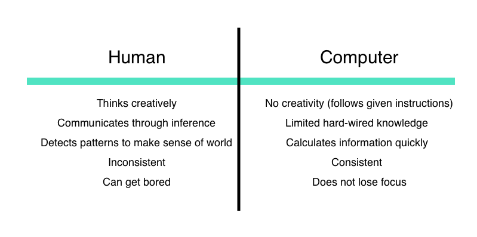

Programming as collaboration
“The problem with programming is not that the computer isn’t logical—the computer is terribly logical, relentlessly literal-minded.”
Ellen Ullman, Life in Code
When we give instructions to a computer through code, we are, in our own way, communicating with the computer. But since computers are built differently than we are, we have to translate our instructions in a way that computers will understand.
Computers interpret instructions in a very literal manner, so we have to be very specific in how we program them. Think about instructing someone to walk. If you start by telling them, “Put your foot in front of yourself,” do they know what a foot is? Or what front means? (and now we understand why it’s taken so long to develop bipedal robots…). In coding, that could mean making sure that small things like punctuation and spelling are correct. Many tears have been shed over a missing semicolon (;) a symbol that a lot of programming languages use to denote the end of a line.
But rather than think of this as a boss-employee relationship, it’s more helpful to think about our relationship with computers as a collaboration.
The computer is just one (particularly powerful) tool in a long list of tools that humans have used to extend and augment their abilities.
As mentioned before, computers are very good at certain things and well, not so good at others. But here’s the good news: the things that computers are good at, humans suck at, and the things that computers suck at, humans are good at! Take a look at this handy table:
Just imagine what we can accomplish when we work together! We can make movies with incredible special effects, have continuous 24/7 factory production, and improve our cities and health.
The best computer programs are the ones that enable us to make things that we couldn’t do on our own, but leverage our creative capacities. We may be good at drawing, but a computer is great at doing the same task repeatedly — and quickly!